🚀 La Solución #1 para Comercios Locales
Transforma tu Inventario en Dinero en Efectivo
Recupera flujo de caja vendiendo tu inventario remanente a precios inteligentes. Reduce pérdidas, multiplica ganancias.
+45%
Flujo de caja
-60%
Desperdicio
+12k
Comercios
Sin tarjeta de crédito • 30 días gratis

0
Comercios activos
0
Productos gestionados
0
Flujo recuperado
0
kg de desperdicio evitado